Sve se radi dugmadima na kartici VANJSKO UREĐENJE PRO u AutoCAD-u. Ništa ne treba kucati: svaka naredba otvara prozor, a tačke i linije birate klikom u crtežu. Prozori pamte zadnje unose (dugme Zadane vrijednosti ih vraća).
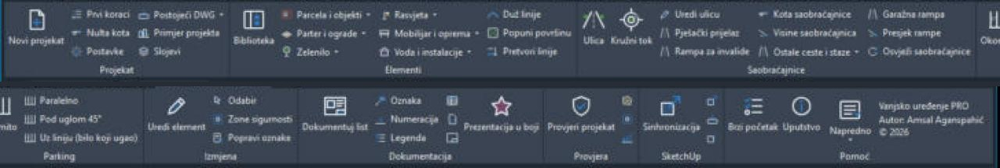
Kartica VANJSKO UREĐENJE PRO: paneli idu redom rada – Projekat, Elementi, Saobraćajnice, Parking, Izmjena, Dokumentacija, Provjera, SketchUp, Pomoć
1. Probajte na primjeru (2 minute)
U praznom crtežu: Projekat → Primjer projekta, izaberite Primjeri alata i U redu.
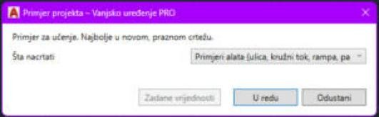
Prozor Primjer projekta
Nacrta se ulica s raskrsnicom i pješačkim prijelazom, kružni tok s tri kraka, garažna rampa, parking (okomito, paralelno, 45°) i drvored:
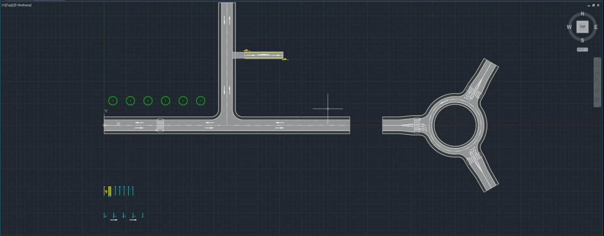
Primjeri alata u crtežu
2. Mijenjanje: desni klik
Kliknite element, pa desni klik: Uredi element… (svi podaci u jednom prozoru), Uredi ulicu… (za ulicu) ili Oznaka.
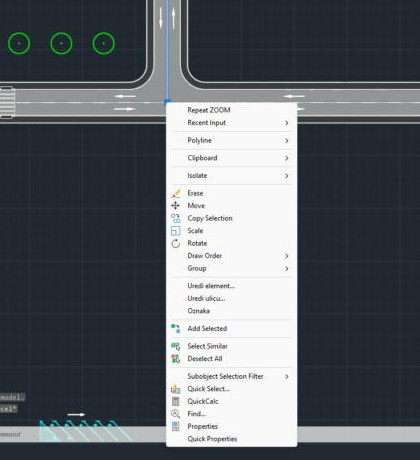
Desni klik na ulicu
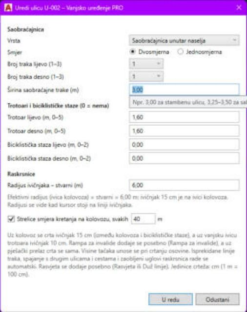
Uredi ulicu: presjek, trotoari, staze, radijusi i strelice u jednom prozoru
Ulice se same spajaju i ponovo crtaju poslije svake izmjene.
3. Projekat i visine
Projekat → Novi projekat: naziv, jedinica crteža, mjerilo.
Projekat → Nulta kota: apsolutna visina ±0,00, parter i saobraćajnice u odnosu na nju. Prozor kaže šta još nedostaje.
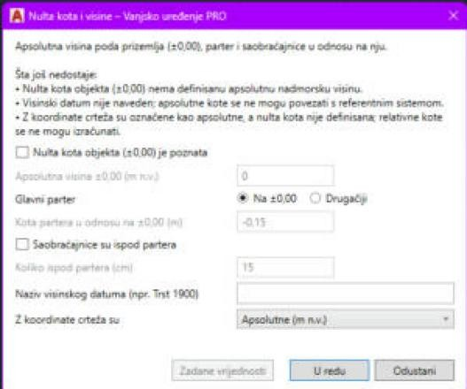
Nulta kota
Koordinate geodete (Pomoć → Napredno → Kontrolne tačke): Dodaj tačku (klik u crtežu + koordinate), zatim Izračunaj i Primijeni.
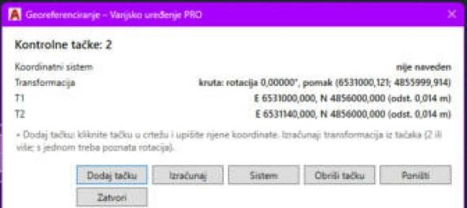
Georeferenciranje: kontrolne tačke s odstupanjima
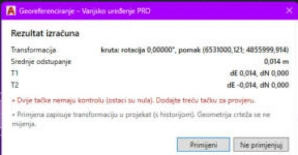
Rezultat izračuna
4. Saobraćajnice i parking
Ulica: prvi prozor je presjek, drugi visine; zatim klikate tačke osovine.
Kružni tok: jedan prozor, pa klik na centar.
Garažna rampa: vrsta i presjek, crtanje, pa visine. Ispod tehničkog minimuma prozor odmah kaže šta ne valja i ne pušta dalje:
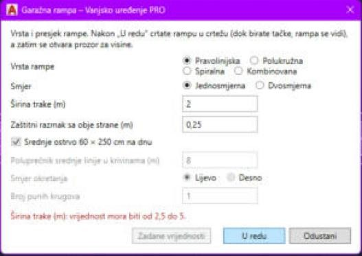
Garažna rampa: vrijednost ispod minimuma je crvenom
Parking → Okomito / Paralelno / Pod uglom 45°: broj mjesta i mjesta za osobe s invaliditetom, pa tri klika (početak, smjer, strana prolaza). Brojevi se nastavljaju ili kreću od 1.
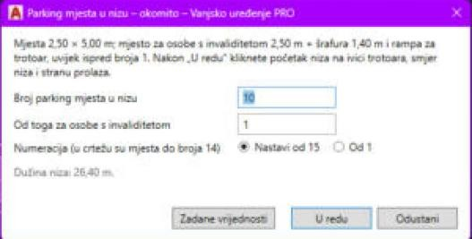
Parking u nizu
5. Zelenilo, oprema, provjera, list
Elementi → Biblioteka ili padajući meniji (Zelenilo, Rasvjeta, Mobilijar); niz elemenata: Duž linije.
Provjera → Provjeri projekat: kolizije, izlazak iz parcele, tehnički minimumi (rezultat u paleti Provjera).
Količine, tabele, teren, pokazatelji: rezultat se otvara u prozoru.
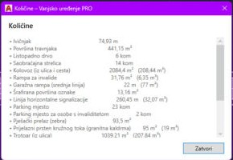
Količine u prozoru
6. AutoCAD → SketchUp
U AutoCAD-u SketchUp → Sinhronizacija → Pošalji u SketchUp i sačuvajte paket (.sdpkg).
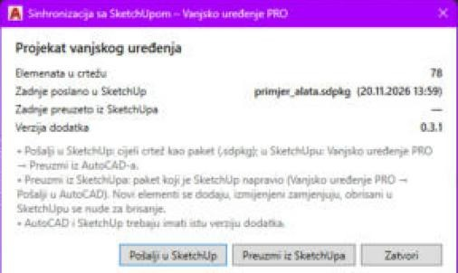
Sinhronizacija u AutoCAD-u
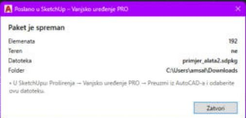
Paket je spreman
U SketchUpu Proširenja → Vanjsko uređenje PRO → Sinhronizacija s AutoCAD-om → Preuzmi iz AutoCAD-a:
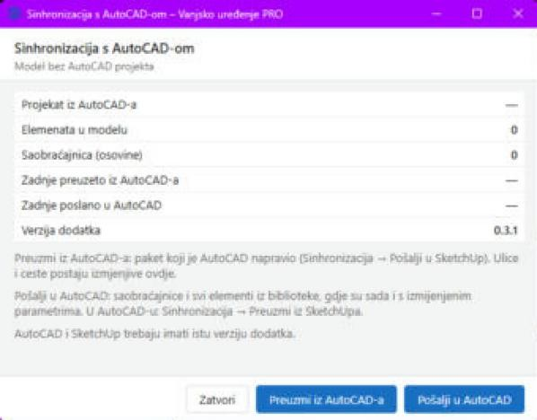
Sinhronizacija u SketchUpu
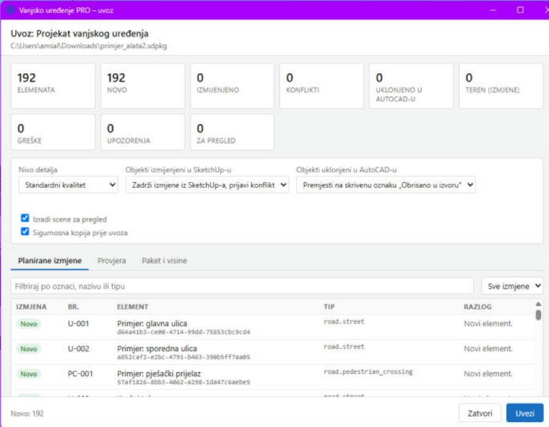
Pregled prije uvoza: šta je novo, izmijenjeno, uklonjeno
Ulice i ceste postaju izmjenjive u SketchUpu (Saobraćajnice → Uredi ulicu), a sve ostalo je u slojevima i scenama:
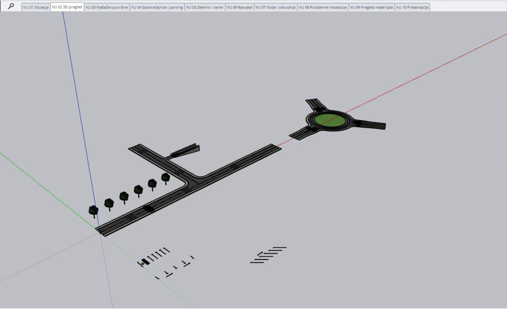
3D model u SketchUpu
7. SketchUp → AutoCAD
Izmijenite u SketchUpu (npr. Saobraćajnice → Uredi ulicu), pa Pošalji u AutoCAD:
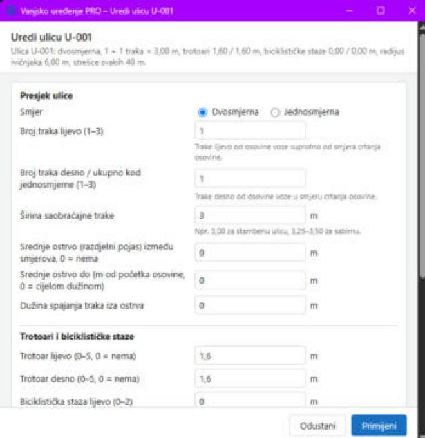
Uredi ulicu u SketchUpu
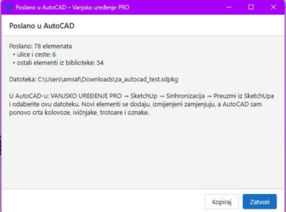
Poslano u AutoCAD
U AutoCAD-u SketchUp → Sinhronizacija → Preuzmi iz SketchUpa i izaberite datoteku. Izmijenjeni elementi se zamjenjuju, novi dodaju, a brisanje se nudi samo za ono što je obrisano u SketchUpu:
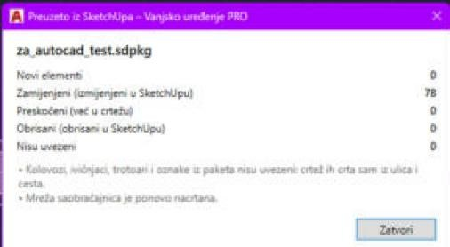
Preuzeto iz SketchUpa
Kad nešto zapne
AutoCAD i SketchUp trebaju imati istu verziju dodatka (vidi se u prozoru Sinhronizacija).
Pitanja u komandnoj liniji umjesto prozora: Pomoć → Napredno → Pitanja u prozorima / komandnoj liniji.
Cijelo uputstvo: Pomoć → Uputstvo.
Uklanjanje oba dodatka: DEINSTALIRAJ_SVE.bat iz instalacionog zipa (crteži i modeli ostaju netaknuti).